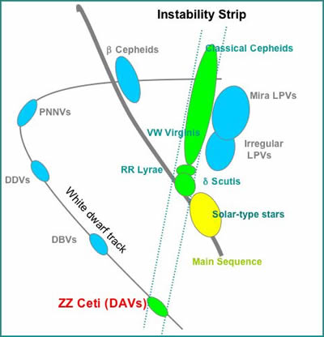

ZZ ceti stars (otherwise known as DAV stars) are a class of variable star characterised by modest luminosity variations (from 0.001 to 0.2 magnitudes or 0.1% to 20% of their average luminosities) and periods of 30 to 1,200 seconds. Their location on the Hertzsprung-Russell diagram identifies them as white dwarf stars that have entered the instability strip as they evolve along the white dwarf track.
The original stars from which ZZ Ceti evolve are intermediate mass stars (6 to 8 solar masses) which have managed to retain hydrogen in their outer envelopes. This type of white dwarf is classified as a DA white dwarf, as opposed to DB white dwarfs that have helium, but no hydrogen in their outer envelopes (hence the alternative name DAV stars).
The surface temperatures of ZZ Ceti stars are about 12,000 Kelvin. The pulsations responsible for their variability are the result of the ionisation and then recombination of hydrogen in the outer envelope.